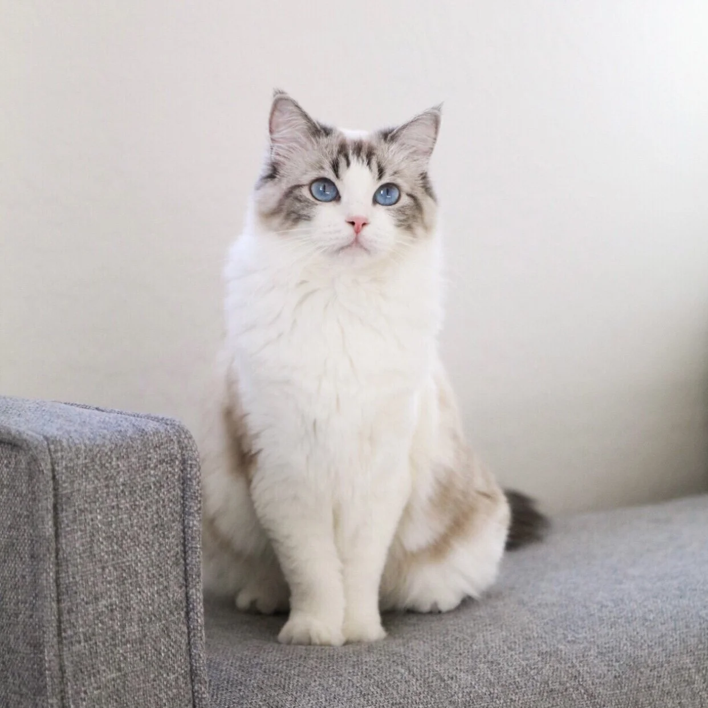

Food and Water
Provide fresh water and balanced food suited to your cat's age and health. Ask your vet about portion sizes and special dietary needs.
Simple advice for happier, healthier cats!

Provide fresh water and balanced food suited to your cat's age and health. Ask your vet about portion sizes and special dietary needs.
A cat's ears, tail, and posture can offer clues about how it feels. Give your cat space to retreat when it seems frightened or uncomfortable.
Scratching posts, climbing spaces, puzzle feeders, and regular play can help keep cats active and mentally engaged.
| Life Stage | Care Focus | Activity Idea |
|---|---|---|
| Kitten | Growth and nutrition | Gentle play |
| Adult | Healthy routines | Interactive toys |
| Senior | Comfort and health | Gentle activity |
Every cat is different. A vet can help you choose the right care for your individual cat.
Answer these questions to think about your cat's needs.
This is a class demonstration. Answers are not saved!